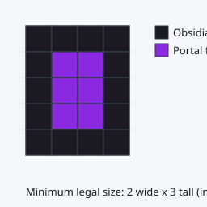
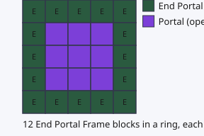
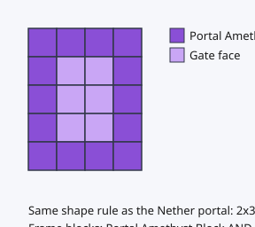
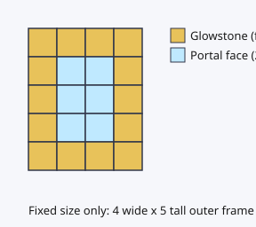
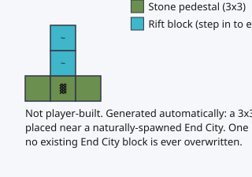

Порталы и врата
Все порталы, через которые реально можно пройти на этом сервере, с постройкой, назначением и схемой.
Портал в Незер (ванильный, без изменений)
Куда ведёт: Верхний мир ⇔ Незер. Этот набор модов не вносит в него ровным счётом никаких изменений. Ванильный портал в Незер работает как есть, по ванильным правилам.

Материал рамки и размер
- Только обсидиан
- Внутренний размер (пустая часть): 2–21 блока в ширину × 3–21 блока в высоту. Минимальный размер — классическая форма из 4x5 блоков обсидиана
- Углы не нужны — если верх, низ и бока рамки закрыты, портал откроется и без обсидиана в четырёх углах
Как поджечь
Примените огниво или огненный шар к пустому пространству внутри рамки.
Частые ошибки
- Портал с внутренним размером вне допустимого диапазона (больше 21 блока, например 23) не откроется
- Если часть рамки сделана не из обсидиана (например, из базальта), портал не откроется
Портал в Энд (ванильный, без изменений)
Куда ведёт: Верхний мир → Энд (в одну сторону; чтобы вернуться из Энда, нужны врата Энда или ванильные способы вроде взрыва кровати). Этот набор модов не вносит в него ровным счётом никаких изменений.

Материал рамки и размер
- 12 блоков рамки портала Энда, расставленных по периметру квадрата 5x5 (генерируются естественным образом в крепости)
- Все 12 должны быть повёрнуты внутрь
Как поджечь
Вставьте глаз Эндера во все 12 блоков рамки. Как только заполнены все, портал открывается сам (предмет для поджигания не нужен).
Частые ошибки
- Крепость сгенерировалась не полностью, и часть блоков рамки отсутствует (недостающее нужно восполнить глазами Эндера)
- Рамка, собранная своими руками с неправильно повёрнутыми блоками, не работает (обычно пользуются только той, что сгенерировалась в крепости естественным образом)
Аметистовые врата
Куда ведут: Верхний мир ⇔ Планаркадия (Planarcadia).

Материал рамки и размер
- Портальный аметистовый блок или ванильный аметистовый блок (поддерживается с V2.2). Эти два вида можно свободно смешивать в одной рамке
- Правило размеров ровно то же, что у портала в Незер: внутренний размер 2–21 блока в ширину × 3–21 блока в высоту, углы не нужны
- Почкующийся аметист, аметистовые друзы и обсидиан как материал рамки не годятся
Как поджечь
Огниво или огненный шар.
Частые ошибки
- Использовать в рамке почкующийся аметист (Budding Amethyst) или аметистовую друзу (Amethyst Cluster) — как материал рамки они не распознаются
- Если подмешать обсидиан, врата не откроются. И наоборот: на этой рамке не откроется портал в Незер (врата двух миров не делят между собой камень)
Врата Небес (портал из светокамня)
Куда ведут: Верхний мир ⇔ Небеса (Sky). Ведут к ангельскому городу и королевству.

Материал рамки и размер
- Только светокамень
- Размер фиксированный: внешний — 4 в ширину × 5 в высоту (полный прямоугольник вместе с четырьмя углами). Внутреннее окно — 2 в ширину × 3 в высоту. Менять ширину и высоту, как у портала в Незер, нельзя
Как поджечь
Огниво. На огненный шар врата не реагируют.
Поджигание собранной самим игроком рамки из светокамня не работает (по умолчанию выключено), пока администратор сервера явно это не разрешит. Если вы поджигаете, а портал не открывается, сначала уточните настройку у администратора.
Частые ошибки
- Собрать рамку размером, отличным от 4x5 (если строить по привычке от портала в Незер, ничего не выйдет)
- Оставить четыре угла пустыми (у этих врат углы тоже нужно заполнить светокамнем)
Вход в Бэкрумс (разлом у города Энда)
Куда ведёт: Энд → Бэкрумс, уровень 1, «Холл».

Эти врата игрок не строит
В отличие от четырёх других врат, этот вход генерируется естественным образом. В Энде, на открытом месте рядом с городом Энда (End City), автоматически ставятся постамент 3x3 и блок «разлома» высотой 2. На один город приходится не больше одного разлома. Ни один блок самого ванильного города Энда при этом не перезаписывается.
Как войти (то, что заменяет здесь поджигание)
Достаточно встать на блок разлома. Никакие инструменты вроде огнива не нужны.
Частые ошибки
- Бывает, что вы приходите в город Энда, а разлома там не видно — если при поиске места установки оно накладывается на окружающие постройки, установка для этого города просто пропускается (это сделано с запасом по безопасности; городов Энда генерируется много, так что ничего страшного)
- Уровень 1, «Холл», — это не демонстрационная комнатка, а настоящий холл, по которому можно ходить и который можно исследовать. Другого уровня прямо за стеной нет, так что спешить и пытаться пройти сквозь стену незачем